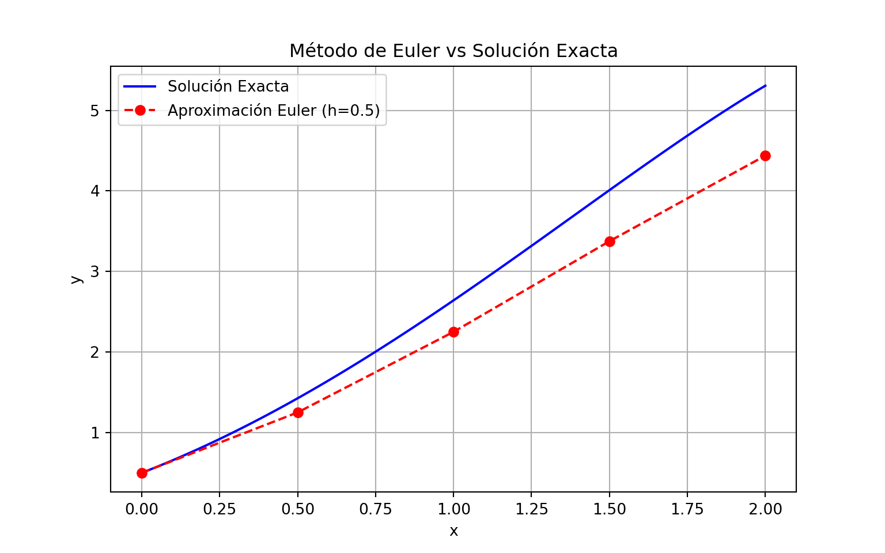
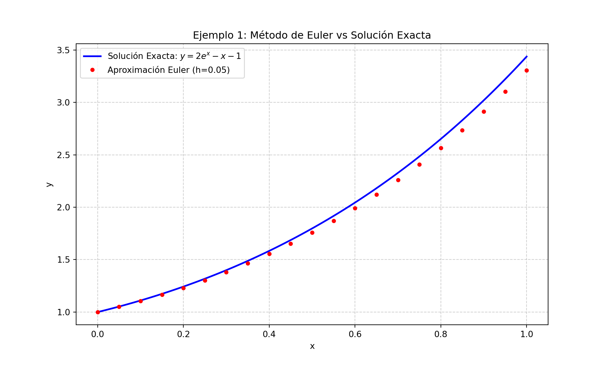
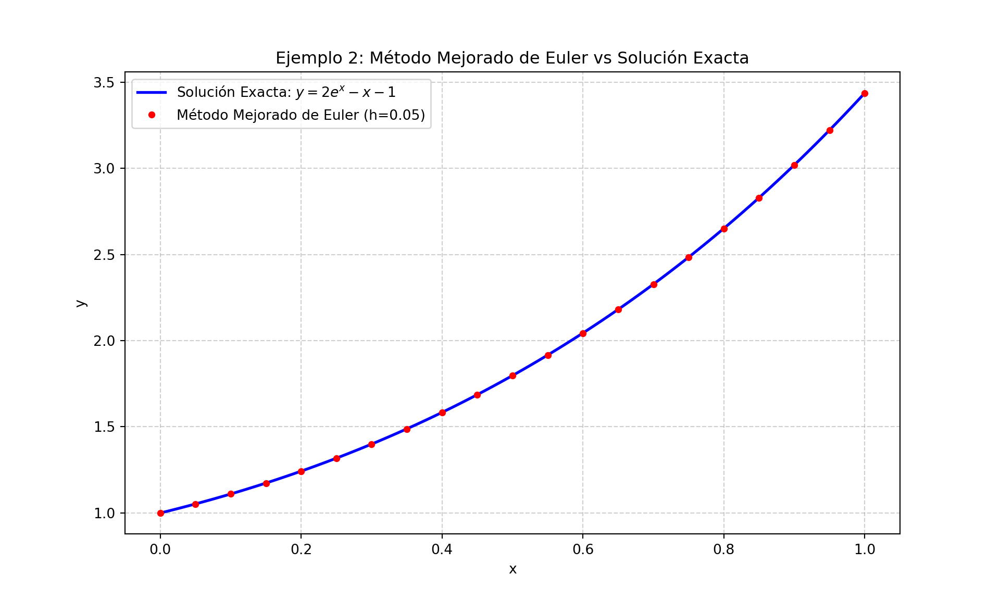
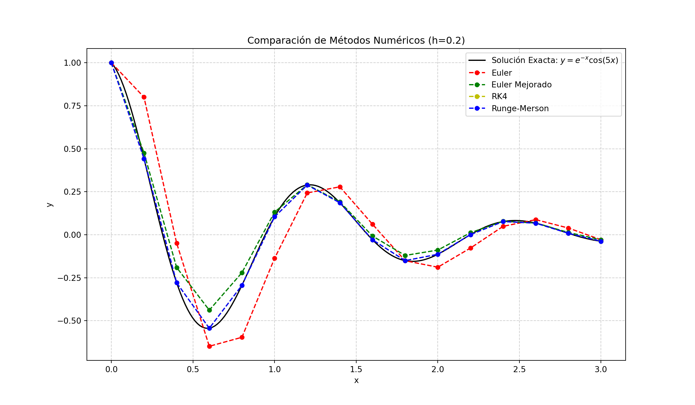

En Ingeniería, el comportamiento de un sistema suele describirse mediante ecuaciones que relacionan la tasa de cambio de una magnitud con la magnitud misma y otras variables.
De hecho, muchas leyes físicas se establecen en términos de razones de cambio, como ocurre en fenómenos relacionados con la caída de un cuerpo o la variación de la temperatura, entre otros.
Estas relaciones se representan comúnmente mediante ecuaciones diferenciales ordinarias (EDOs), unas ecuaciones que vinculan una función de una única variable independiente con sus derivadas, describiendo formalmente cómo cambia dicha función respecto de esa variable.
Se estudiará la resolución numérica de dos problemas asociados a las ecuaciones diferenciales ordinarias:
En un problema de valor inicial las condiciones se establecen sobre el instante inicial y en un problema de contorno, las condiciones se imponen tanto en el extremo inicial como en el final de un intervalo.
Como ejemplo de ecuación diferencial, se muestra un ejemplo de un sistema masa-resorte.
Este sistema está compuesto por una masa \(m\) unida a un resorte que ejerce una fuerza proporcional al desplazamiento, según la ley de Hooke. Si además se considera una fuerza de amortiguamiento proporcional a la velocidad, se obtiene la siguiente ecuación diferencial de segundo orden:
\[ m \dfrac{d^2x}{dt^2} + c \dfrac{dx}{dt} + kx = 0 \]
donde:
\(x(t)\) es el desplazamiento de la masa en función del tiempo,
\(m\) es la masa,
\(c\) es el coeficiente de amortiguamiento,
\(k\) es la constante del resorte.
El problema de valor inicial, PVI, puede escribirse de forma general como
\[ \left\{ \begin{aligned} & y'\left( t \right) = f\left( {t,y\left( t \right)} \right)\,\,\,\,\,\,\,\,\,t \in \left[ {{t_0},{t_f}} \right] \\ & y\left( {{t_0}} \right) = {y_0} \end{aligned} \right. \]
siendo \[ -\infty < {t_0} < {t_f} < \infty \]
\[ f:\left[ {{t_0},{t_f}}\right]\text{x}{\mathbb R^n} \to \mathbb R^n \]
Este método fue ideado por Euler hace más de 200 años. Es bastante sencillo, pero no tan preciso como los otros métodos que veremos posteriormente.
Sin embargo, el método de Euler sirve como punto de partida hacia técnicas alternativas que aparecerán según se considere.
El objetivo del método es obtener una aproximación al problema
\[ \dfrac{dy}{dx} = f(x,y), \qquad a\leq x\leq b \]
con la condición inicial, \(y(x_0) = y_0\).
Inicialmente no se obtendrá una aproximación continua de la solución \(y(x)\), sino que se generarán aproximaciones de \(y\) en varios puntos, llamados puntos de red, en el intervalo \([a,b]\).
Una vez que se obtenga la solución aproximada en estos puntos, es posible encontrar un polinomio de interpolación que se ajuste a los valores (tabulados) obtenidos.
Supondremos que los puntos de la red están distribuidos uniformemente sobre el intervalo \([a,b]\). Podemos garantizarlo, escogiendo un entero positivo \(n\) y seleccionando los puntos de red \(x_0 < x_1 < x_2 < \cdots < x_n\), donde \(x_i = x_0+ih\)
La distancia común entre los puntos, \(h=\frac{b-a}{n}\), se llama tamaño de paso, y el punto inicial, \((x_0,y_0)\), es el único punto conocido de la solución exacta.
La aproximación \(y_1\) en el próximo punto \(x_1\) de la red está determinado por la recta tangente a la curva \(y\) en el punto \((x_0,y_0)\):

Como
\[ \dfrac{y_1-y_0}{x_1-x_0} = y'(x_0) = f(x_0,y_0) = \dfrac{dy}{dx} \]
entonces
\[ y_1 - y_0 = (x_1-x_0) f(x_0,y_0) \Rightarrow y_1 = y_0 + h f(x_0,y_0) \]
Y en general \[ y_{n+1} = y_n + h f(x_n,y_n) \qquad \text{ con } h=x_{n+1}-x_n \]
Sea la E.D.O.: \[ y'=f(x,y)=x+y,\qquad y(0)=1, \quad\text{con } x\in[0,1]\quad\text{ y }h=\frac{1}{20} \]
\[\begin{align*} y_0 & = 1\\ y_1 & = y_0 + hf(x_0,y_0) = 1 + \frac{1}{20}(0+1) = 1 + \frac{1}{20} = 1.05\\ y_2 & = y_1 + hf(x_1,y_1) = 1.05 + \frac{1}{20}(0.05+1.05) = 1.05 + \frac{1}{20}(1.1) = 1.105\\ \vdots\\ y_{20} & = 3.306577 \end{align*}\]

## Resultado final aproximado (y_20): 3.306595## Resultado final exacto (y(1)): 3.436564El método de Euler es un método de integración numérica que se utiliza para resolver ecuaciones diferenciales ordinarias (EDOs) de primer orden. Este método es simple y fácil de implementar, pero puede no ser el más preciso para problemas complejos.
Sea la E.D.O: \[ y'=f(x,y),\qquad y(x_0)=y_0 \]
Integramos la E.D.O. entre \(x_0\) y \(x_1\): \[ \int_{x_0}^{x_1} y'\,dx = \int_{x_0}^{x_1} f(x,y)\,dx \]
La primera integral es la integral indefinida de \(y'\), que es \(y\), y por el teorema fundamental del cálculo, la ecuación se convierte en: \[ y(x_1) - y(x_0) = \int_{x_0}^{x_1} f(x,y)\,dx \]
La segunda integral se puede aproximar usando la regla de trapecio y se tendría que:
\[ y(x_1)-y_0 = \dfrac{h}{2}\left(f(x_0,y_0)+f(x_1,y_1)\right) \] Por lo tanto \[ y_1 = y_0 + \dfrac{h}{2}\left(f(x_0,y_0)+f(x_1,y_1)\right) \]
Aquí el problema se presenta por el término \(y_1\) a la derecha de la ecuación. Entonces podemos calcular \(y_1^p\), por Euler. Es decir,
\[ y_1^p = y_0 + hf(x_0,y_0) \]
Por lo tanto \[ y_1 = y_0 + \dfrac{h}{2}\left(f(x_0,y_0)+f(x_1,y_1^p)\right) \]
Este método es un ejemplo de los llamados métodos Predictor-Corrector, donde \(y_{n+1}^p\) es el Predictor y \(y_{n+1}\) el Corrector.
Sea la E.D.O.: \[ y'=f(x,y)=x+y,\qquad y(0)=1, \quad\text{con } x\in[0,1]\quad\text{ y }h=\frac{1}{20} \]
\[\begin{align*} y_0 & = 1\\ y_1^p &= y_0 +hf(x_0,y_0) = 1+\frac{1}{20}(0+1) = 1.05\\ y_1 &= y_0 + \dfrac{h}{2}\left(f(x_0,y_0)+f(x_1,y_1^p)\right) = 1 + \dfrac{1}{40}\left[\left(0+1\right)+\left(0.05+1.05\right)\right] = 1.0525\\ y_2^p &= y_1 +hf(x_1,y_1) = 1.0525 + \frac{1}{20}(0.05+1.0525) = 1.107625\\ y_2 &= y_1 + \dfrac{h}{2}\left(f(x_1,y_1)+f(x_2,y_2^p)\right) = 1.0525 + \dfrac{1}{40}\left[\left(0.05+1.0525\right)+\left(0.1+1.107625\right)\right] = 1.11025313\\ \vdots\\ y_{20} & = 3.434368 \end{align*}\]

## Resultado final aproximado (y_20): 3.434382## Resultado final exacto (y(1)): 3.436564Los métodos de Runge-Kutta son una serie de metodos numéricos usados para encontrar aproximaciones de las soluciones de ecuaciones diferenciales y sistemas de ecuaciones diferenciales, lineales y no lineales.
Son métodos iterativos que usan la información de la derivada de la función en varios puntos para calcular una aproximación de la solución de la ecuación diferencial en un intervalo.
Los métodos de Runge-Kutta son una especialización de los métodos numéricos a un paso. Fundamentalmente, lo que caracteriza al los métodos de Runge-Kutta es que el error en cada paso \(i\) es de la forma
\[ E_i = C h^k \]
Siendo \(C\) una constante real positiva, al número \(k\) se le llama orden del método y \(h\) es el tamaño del paso en cada nodo.
\[ y_{i+1} = y_i + hk_1\\ \] con \[ k_1 = f(x_i,y_i) \]
En dicho método el error es de la forma \(E \leq C h\) y por tanto el método de Euler es de orden 1
Observación: La función se evalúa 1 vez en cada paso, número de etapas: 1.
\[ y_{i+1} = y_i + \dfrac{1}{6}\left(k_1+2k_2+2k_3+k_4\right) \] con \[\begin{align*} k_1 &= hf(x_i,y_i)\\ k_2 &= hf\left(x_i+\dfrac{h}{2},y_i+\dfrac{1}{2}k_1\right)\\ k_3 &= hf\left(x_i+\dfrac{h}{2},y_i+\dfrac{1}{2}k_2\right)\\ k_4 &= hf\left(x_i+h,y_i+k_3\right) \end{align*}\]
En dicho método el error es de la forma \(E \leq C h^4\) y por tanto el método de Runge-Kutta estándar de orden 4 es de orden 4
Observación: La función se evalúa 4 veces en cada paso, número de etapas: 4.
\[ y_{i+1} = y_i + \dfrac{1}{6}\left(k_1+4k_4+k_5\right) \] con \[\begin{align*} k_1 &= hf(x_i,y_i)\\ k_2 &= hf\left(x_i+\dfrac{h}{3},y_i+\dfrac{1}{3}k_1\right)\\ k_3 &= hf\left(x_i+\dfrac{h}{3},y_i+\dfrac{1}{6}(k_1+k_2)\right)\\ k_4 &= hf\left(x_i+\dfrac{h}{2},y_i+\dfrac{1}{8}(k_1+3k_3)\right)\\ k_5 &= hf\left(x_i+h,y_i+\dfrac{1}{2}(k_1-3k_3+4k_4)\right) \end{align*}\]
En dicho método el error es de la forma \(E \leq C h^5\) y por tanto el método de Runge-Merson es de orden 5
Observación: La función se evalúa 5 veces en cada paso, número de etapas: 5.
Sea la E.D.O.: \[ y'=f(x,y)=-y-5e^{-x}\sin(5x),\qquad y(0)=1, \quad\text{con } x\in[0,3]\quad\text{ y }h=0.2 \]

En el siguiente enlace Ejercicios_Unidad6 encontrará una
lista de ejercicios relacionado con los distintos tópicos cubiertos en
esta quinta unidad.
Descargue el PDF de esta guía de ejercicios aqui:
Última revisión: 08 de enero, 2026